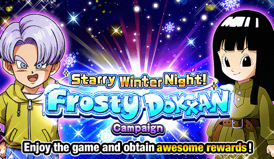
Finalmente chegou né.
Uma das celebrações mais importantes pro global, tava todo mundo esperando o vegeta e trunks, incluindo eu obviamente
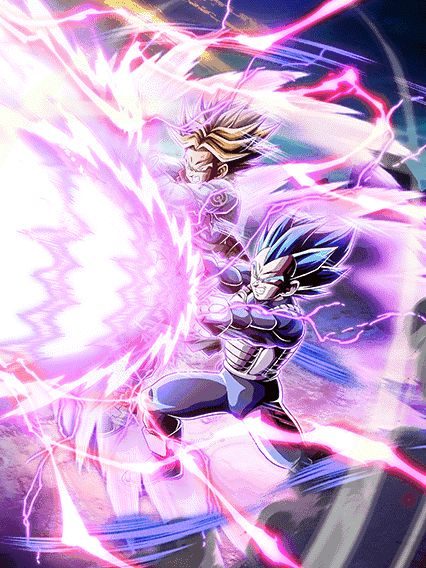
O melhor card do jogo.
O vegeta e trunks na minha opinião são um dos melhores lançamentos do dokkan, simplesmente pq eles são mais fortes que os LRs do sétimo aniversário, mas não de um jeito que humilha eles e o resto do jogo, é como se fosse um card balanceado e desbalanceado ao mesmo tempo
Pra começo de conversa eles introduziram uma das categorias mais fortes do jogo, Bond of Parent and Child (apelidada carinhosamente para "Bonde do pai e filho"), que só incluí todos os gokus, gohans, gotens, alguns vegetas, etc etc.. se vc interagiu com seu pai, cê tá na categoria
E vamo lá, esses caras são feitos para serem o tank do time, já que eles ganham diversos buffs e tem defesa ativa se estiverem no slot 1, só isso faz eles muito absurdos defensivamente
E como se não bastasse isso, eles ainda buildam mais defesa tomando 5 golpes e stackam ATK e DEF no ultra super attack, oq faz deles AINDA MAIS tank, insano
E eu vou ser honesto, a não ser que o seu esteja rainbow, o dano deles é um pouco baixo, mesmo que eles stackem, felizmente eles tem um adicional com 30% de chance de ser super que por algum motivo sempre ativa (acho que é o adicional mais gente boa que tem no jogo) e ainda buildam um pouco de crítico tomando golpes que ajuda no dano deles também
E aí tem uma das habilidades mais desbalanceadas deles, que é a active skill
A active deles é muito forte, já que ela torna todos os ataques deles críticos no turno, dá um dano muito bom e completa buffando a DEF de todos os aliados em 20% no turno, o que é extremamente forte se tiverem outros cards que stackam no turno
Essa active deu um valor absurdo pro vegeta e trunks, já que eles não só são um tank, mas eles ajudam o time dando um suporte legal
E como se não bastasse tudo isso, ainda finalizamos com as animações e osts desse card sendo excepcionalmente lindas (tirando a animação de intro deles que é muito longa e te faz dormir)
Um mini "easter egg" desse card é o fato de eles usarem coisas do mangá aqui, já que o vegeta no ultra super attack usa o Gamma Burst Flash, exclusivo do mangá
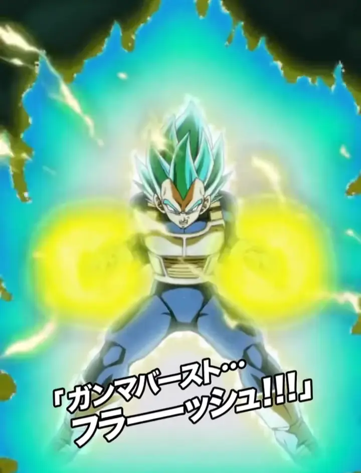
Card lindo, forte, maravilhoso.
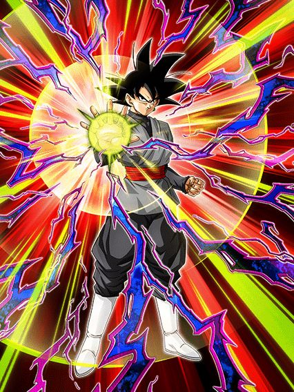
Sério q gastaram esse momento do black em um card secundário? 💀
Esse cara é simples, só que simples demais e isso complica ele infelizmente
Ele só tem 100% de ATK e DEF, builda mais 100% tomando 4 golpes e tem suporte, é só isso
Ele fica efetivo contra tudo depois de levar 5 ataques mas o dano dele nem é alto então não muda muita coisa
Ele é um bom card pra battlefield e basicamente nada mais, pq o suporte dele é bom, 40% de ATK e DEF pra Future Saga, mas ele se complica em times pra ativar o Big Bad Bosses dele e tals
Um card bonito, com uma proposta interessante mas infelizmente não foi o suficiente.
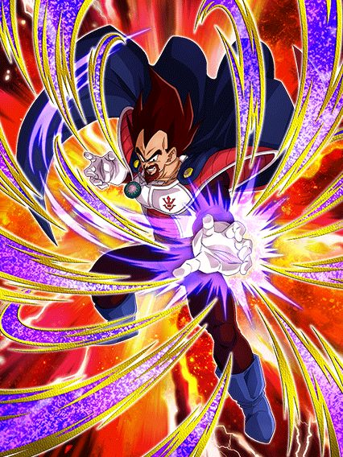
Para sua segurança, use um time pure saiyans.
Esse cara não é muito ruim não, ele consegue até ser decente num time full pure saiyans, já que ele é um suporte, tem um dano uhhh bom até, e ele com uma build de desvio é até usável, nada mal
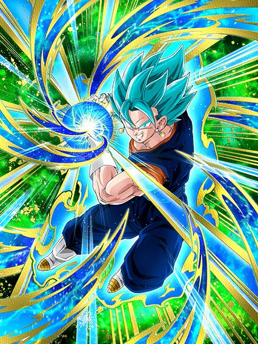
Seria este o retorno do rei dos stacks? não
Bom, o grande foco desse EZA foi buffar a defesa do Vegetto já que ela era inexistente antes, então agora ele tem 150% de DEF e ganha mais 50% quando atacar, o que é decente já que ele stacka ATK e DEF no super
Oq ferrou esse cara foi eles terem se segurado muito exatamente pq ele stacka, já que os adicionais que ele lança agora são garantidos, mas continuam tendo só 30% de chance de serem supers, e obviamente nos eventos atuais você quer ter o máximo de stacks possíveis pra tankar e dar bastante dano, mas essa chance de super adicional continuar sendo tão baixa é um problema triste
Ele podia ter sido melhor..
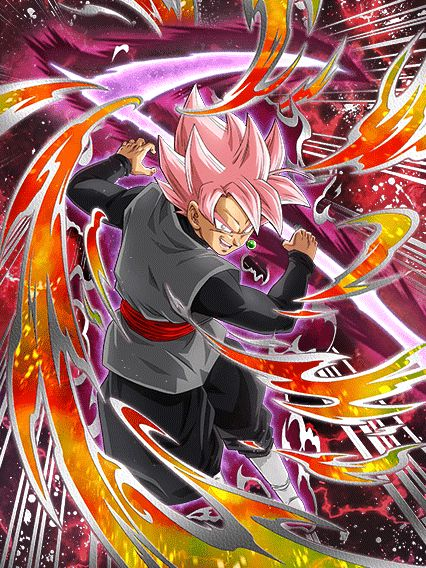
⚠ Esta análise está indisponível. Para desbloquear o acesso, dê um golpe final no boss. ⚠
Esse cara tem muita coisa interessante, ele dá um bom dano e ainda é um suporte
O suporte dele é de 50% de DEF pra extreme class, e se for um aliado Real of Gods, ainda dá mais 50% de ATK, o que é bem forte sim
Mas o que segura esse goku black são os 50% de ATK e DEF e dano efetivo que só ativam depois do goku black dar um golpe final no boss, e qualquer um sabe que a mecânica de golpe final é horrível
Esses 50% dão uma diferença considerável no dano e defesa dele, e infelizmente é muito difícil conseguir ativar isso em eventos difíceis, oq obviamente limitou ainda mais esse cara a ser usável
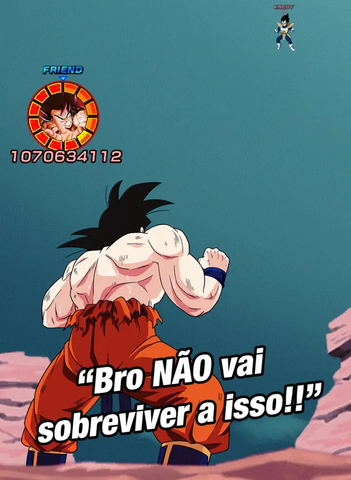
Fato: A imagem acima NÃO ESTÁ EDITADA.
Eis aí um dos momentos mais hilários do Global
Tudo começou quando o novo "estilo de evento" Burst Mode foi introduzido no JP, sendo uma forma interessante de rejogar eventos antigos
Por lá, foi tudo bem, mas o problema aconteceu quando o Burst Mode veio pro global..
O Burst Mode aconteceu num evento da Saga Saiyajin, onde tinham umas missões relativamente complicadas, mas não impossíveis
Bom, toda dificuldade acabou quando alguém notou uma coisa engraçada na lista de friends..
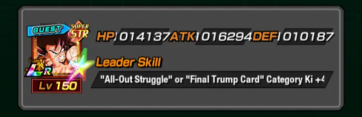
Esse Goku Kaioken LR é um resquício de alguma conta hackeada de bot feita pra farmar DSs que por algum motivo eles não removeram da lista de friend
Por sinal, os números que estão aí são erro de cálculo, ele na verdade tem 99999999999999999 de stats no hidden potential, além de ter 50 pontos em cada habilidade
OBVIAMENTE a luta ficou estupidamente fácil né, mas não demorou muito pros devs notarem oq aconteceu.. e aí veio o real motivo de isso ser um "incidente"
Vamos lá, este Goku esteve disponível de friend pq os devs esqueceram de remover essa conta em específico
Veja bem: OS DEVS ESQUECERAM
Foi um erro que ELES cometeram, então certamente eles jamais ameaçaram banir os players que usaram esse Goku né?
...
Pois é.
Da mesma forma que ameaçaram banir os players na época do famigerado "Bug do modo avião", eles tentaram de novo aqui
Eu acho que o mais interessante desse caso foi a diferença de reação entre Global e JP
Acabaram eventualmente achando cards hackeados também no JP, e enquanto lá teve um calmo pedido de "Por favor, evitem utilizar estes personagens, pois utilizar eles pode acabar em alguma quebra dos termos de serviço. Estamos trabalhando para resolver isso o quanto antes.", no Global os cara imediatamente meteram um "AÇÕES SERÃO TOMADAS AOS PLAYERS QUE UTILIZARAM ESSE CARD"
No final das contas nada aconteceu com ninguém obviamente
Todo mundo que usou o Goku hackeado teve os pontos no Burst Mode resetados e tiveram que vencer novamente de forma justa
Em geral, foi um momento engraçado, até pq brincar com esse Goku usando itens resultou em prints bizarras e muito engraçadas
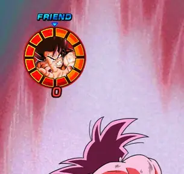
O valor de ATK desse cara foi tão absurdo que simplesmente ultrapassou o limite de cálculo do jogo, que coisa maravilhosa
Simplesmente hilário.

Ele tem os discursos, as osts, as animações..
Ele tem tudo.
Esse card aqui é simplesmente lindo, e falo em geral mesmo, esse é um dos cards mais lindos do dokkan
Pra começo de conversa ele tem uma intro incrível do black e zamasu se fundindo, o zamasu diz o discurso todo sobre ser a justiça e o mundo, e pra completar ainda tem uma OST super similar a OST de DBS mesmo, o que é perfeito
Sobre o kit dele em si, ele tem muita coisa interessante que podia ser melhor..
Ele tem 20% de redução de dano permanente, e ganha 2% a cada ataque q ele leva no turno num máximo de 10% (sim isso reseta a cada turno), o que sim, é uma habilidade horrível já que só depois de levar 5 ataques ele tem 30% de redução de dano que nem é tanto assim né
Pra compensar esse problema da redução de dano, ele lança um super adicional garantido se vc fizer um ultra super attack e cada super aumenta o ATK e DEF dele em 50% no turno, oq é bem útil
Ele ainda tem uns extras, como curar vida e ganhar ki depois de levar muitos golpes, e tá aí um grande problema do zamasu, ele precisa levar um monte de ataque pra buildar uma passiva legal e nem sempre vai dar tempo de fazer tudo isso
Ele também tem 70% de chance de counterar supers desarmados, oq é extremamente raro, cê vai ver isso 1 vez e depois vai ver de novo em uns 5 anos
E pra completar ele tem uma active que infelizmente só dá dano, e tem uma condição meio paia de ter que dar 5 supers, mas não é ruim, e animação e OST dessa active são muito boas
Bom, tendo dito as coisas boas e problemas do zamasu, só faltou dizer o melhor, que é a arte dele, já que ela é uma obra de arte pura, effects lindos, o black e o zamasu no fundo, é muito lindo, e você simplesmente vê isso depois de alguns segundos
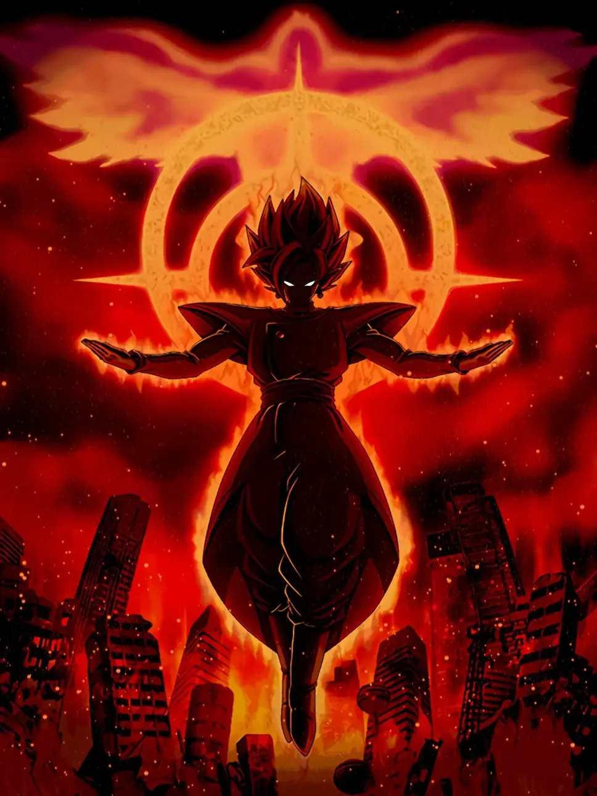
Essa é basicamente a visão dos sobreviventes do futuro olhando pro zamasu, o cara é a representação do desespero e perdição
Uma das minhas artes favoritas, obrigado dokkan
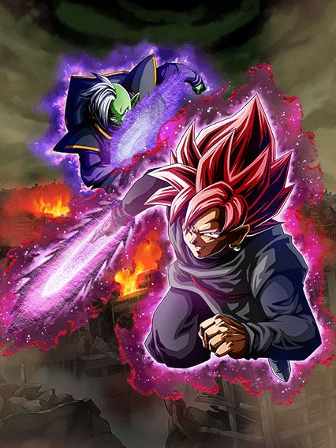
Um tank muito bom.. por 3 turnos?
Esse card é bem básico, eles são um tank e curam vida
Eles buildam praticamente toda a defesa deles tomando 4 ataques, e de fato, buildados a defesa deles é decente sim
A coisa é que eles tem defesa ativa por 3 turnos, o que ajuda muito eles a buildarem, mas pô, 3 turnos é pouco né, podia ser melhor.. mas eles são um bom card, úteis pra ajudar o novo zamasu.
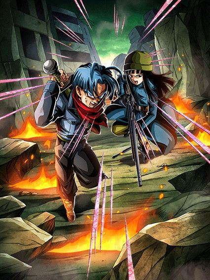
Bons, mas muito restritos.
Precisam de um time full Time Travelers pra ter números decentes de ATK e DEF e ainda sim eles não vão tankar tão fácil assim
Eles são um suporte pra qualquer super class, que é interessante, mas a restrição final mata eles..
50% de chance de desvio, mas só se tiver um inimigo Future Saga, aí não dá cara, literalmente 0 bosses importantes
Se eles fossem menos restritos, seria um card muito bom.
Atualização 2023: Eles são usáveis na red zone dismal future, não que eles tankem nada por lá, mas o desvio ajuda bastante
Você chegou ao fim dessa página!
Obrigado por ler tudo, e fica a vontade pra ver outras